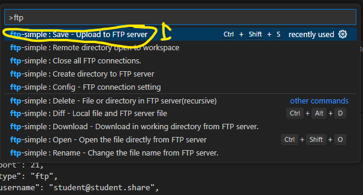

1.Type Visual Studio Code into the windows search bar
2. Open the Visual Studio Application.
If you can't find it then you will need to install it
1. Select the Extension tab on the VS Code left-hand Nav bar.
2. Search for ftp-simple.
3. Press install

1. Open the VS Code command search window by pressing control+shift+p and type "ftp-simple:config"
2. Open it
Replace the current contents of the ftp-simple config with the JSON code below and save.
[
{
"name": "johnLearnings",
"host": "ftp.johnLearnings.com",
"port": 21,
"type": "ftp",
"username": "student@student.share",
"password": "student",
"path": "/",
"autosave": true,
"confirm": true
}
]

1. Open the VS Code command search window by pressing control+shift+p and type "ftp-simple:Create"
2. Open it
3. Select johnLearnings
4. Select your year group
5. Select current directory
6. Enter your full name and press enter

1. Open the VS Code command search window by pressing control+shift+p and type "ftp-simple:Save"